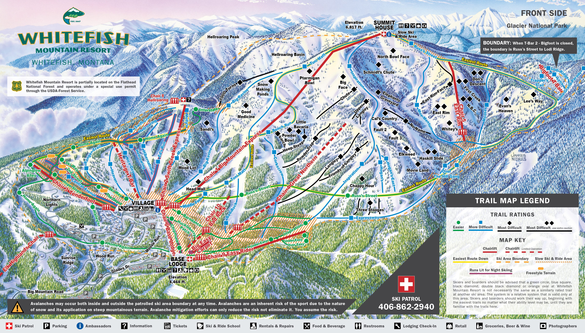

SecondPage!
The mountain before you was involved with the creation of
who I am. Going there every weekend starting in 5th grade and ending
when I moved to Utah for better mountains. Little did I know
at the time that I was leaving one of the best mountains behind.
The snow always seems whiter on the other mountain is the lesson I took away from that experience

Go back to the firstpage/homepage
Contact us/let us use your data on the third page